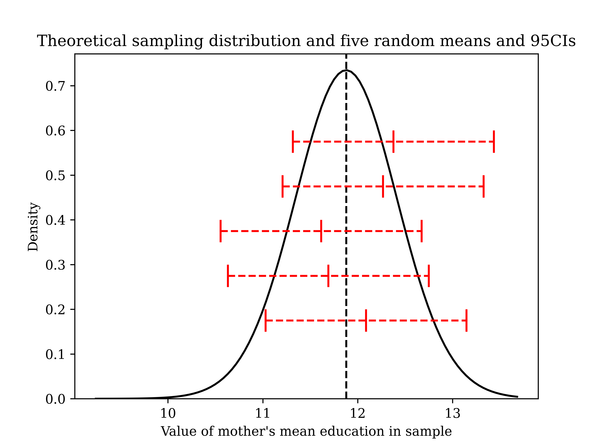

basic math for social sciences I: basic descriptive and inferential statistics#
Some basic operations#
Suppose you run across an expression such as \(\sum_{i=1}^n y_i\). What does this mean? The summation operator, \(\sum\), tells us to sum from the observation denoted at the bottom of the capital greek letter \(\Sigma\) (“sigma”, which makes the “s” sound, as in sum) and go up until the observation denoted on top of the \(\Sigma\). For us, the bottom item will almost always be individual (denoted i) equal to one, going up until individual equal to n, where n is the sample size. Please note carefully that we’re using small Latin letters here in two different ways: i is an index, which varies across individuals; n is a constant and a property of the data-set as a whole. Examine this simple example data-set:
\[\begin{split} \begin{array}{|c|c|} \hline \textbf{i} & \textbf{y} \\ \hline \text{1} & \text{3} \\ \hline \text{2} & \text{10} \\ \hline \text{3} & \text{2} \\ \hline \text{4} & \text{4.5} \\ \hline \end{array} \end{split}\]Now, try to carry out the arithmetic operation indicated by the following notation: \(\sum_{i=1}^n y_i\).[1]
The numbering of individuals is, for our purposes, basically always arbitrary, and summation is commutative anyways (the order of the items summed, or the summands, does not matter), so sometimes you will see the sub- and superscripts omitted.
Now let’s define the sample total, which allows us to estimate the population total. We write the total with the use of sample weights, which are not a key feature of this class, but they are something that you should know the basics of. Our weights are simply the inverse probability of selection into the sample. This is because the total of the population is (unlike the mean, with which we’ll work more often) a function of the size of the population, of which the sample is an arbitrarily-sized fragment. Note that if each observation has a different probability, we need to put this inside of the summation. In our case, we’ll deal only with the equal probability of selection (epsem) method, so this is a constant that can be factored out.
The last piece of notational throat-clearing that we need at the momen is that we will need is that we we will represent random variables in their most abstract form with capital Roman letters; their sample equivalents have lowercase Roman letters. Greek letters are reserved for parameters, facts about the population that we want to know (but can’t directly observe). Here, the \(\tau\) (“tau”, which makes a “t” sound) stands for “population total”. The notation means that to find the sample estimate of the total of the random variable Y, we sum up the observed values in the sample, \(y_i\). Note that this also means that \(\pi\) will typically mean, in our context, the probability of something (here, selection into the sample) rather than Archimedes’ constant (3.1415926…)
\[\begin{align*} \widehat{\tau}_Y &= \frac{1}{\pi} \sum_{i=1}^n y_i \end{align*}\]The mean is a measure of central tendency—something like the “characteristic value of a distribution”, which the mean, median and mode all get at. We focus most attention on the mean in this class; however, the median is an important measure, especially in the context of quantiles more generally. “Mean” is simply the formal term for the arithmetic average. We’ll focus on the simple case where possible outcomes are discrete, meaning that they are finite in number or countably infinite (more in a second); simple descriptive statistics for any real world data-set can be calculated using these simpler discrete formulae. Sometimes, we will need to discuss variables with infinite possible values, known as continuous variables.
For example, if we record the number of cars someone has, while they could tell us that they have any number up to infinity, this is countably infinite; setting aside the formal definition, this means basically that if I pick an arbitrary number of functioning cars someone owns (say, five cars), I can tell you the next value in the set of possible outcomes with no question (six cars); so, cars owned is a discrete variable.
By contrast, if we ask someone about their height and they reply with “74 inches”, I can’t say what height is “next”. I could, for example, say 75 inches, but since 74 inches is about 188cm, 189cm is nearer than 75 inches. And this, of course, can extend even further, to the micron (if we had a microscope). Since height can take on an uncountable number of possible values: it is continuous. (It is fun, but not super important, to wonder about why some variables are continuous and others are discrete. In the cars case, it is just definitional; while parts of cars do exist, if I am only interested in complete, functioning cars, those simply do not come in halves; by contrast, there is no similar limit on height).
The mean is sometimes referred to as the expected value or expectation. When we write the mean as an expected value or expectation, we conceptualize it as a population-level property; it is the weighted sum of all possible values of the variable. So, we are summing over the possible outcomes of the variable when we write the mean as an expectation—we are not summing over any observed individuals. Many textbooks and internet sources do not change their notation here, which confuses new students, so I will now re-index the sum. Let k index an outcome of the random variable Y (i.e., “k=5” would mean the fifth possible outcome, where order again typically does not matter) and let K indicate the number of possible outcomes. Then, for a discrete random variable (don’t worry about the continuous formula here):
\[\begin{align*} \mathbb{E}[Y] &= \sum_{k=1}^K y_k * \mathbb{P}(Y=y_k) \end{align*}\]This says that we look at each possible outcome k, starting with k = 1, and multiple the value of that outcome \(y_k\) by its probability of occurring, \(\mathbb{P}(Y=y_k)\). Note, also, that \(\mu_Y\) is another way to denote the population mean; the difference between this and \(\mathbb{E}[Y]\) is like the difference between writing “the average” and “total over sample size”, respectively.
For a given set of data, the formula does not change, even if the variable is itself continuous; this is because all actual observed data-sets are discrete: there is a finite number of observed values. If we have any repeated values, we effectively use this as a sample estimate of the probability of observing that value at the population level. If the variable itself has many possible outcomes (whether it is discrete or continuous) and no values repeat themselves exactly, then the estimated probability of each value is just \(\frac{1}{n}\).
So, in practice, with equal probability sampling, it is often simpler to write out the mean as the simple arithmetic mean, even if we have repeat values.
Note one exception for our notation rules mentioned above: It would make most sense to use, for the sample mean, the notation \(\widehat{\mu}_Y\). However, most textbooks use the notation \(\bar{Y}\) for the random variable and \(\bar{y}\) for some specific sample mean. The problem with this notation is that it breaks the general rule about Greek and Roman letters mentioned above and requires you to memorize a new notational rule, but it is extremely common, so we will use it. For any specific sample mean…
\[\begin{align*} \bar{y} &= \sum_{i=1}^n \frac{1}{n} * y_i \cr \bar{y} &= \frac{1}{n} \sum_{i=1}^n y_i \ && \text{since $\frac{1}{n}$ is constant, it factors out of the sum} \cr \end{align*}\]Note that this means that a simple mean implicitly takes the inclusion of each member of the sample to have been equally probable. This is false with a stratified random sample. So, we fix this by multiplying by the inverse of the probability of inclusion, the sample weight \(w = \frac{1}{\pi_i}\), where \(\pi_i\) is i’s probability of being included in the sample as \(\pi_i\). Note that \(\pi_i\) is a parameter, not a statistic; every member of our sample has a known probability of inclusion. In the case of simple random sampling, every member of the population has an equal probability of inclusion of \(\frac{n}{N}\), where n is the sample size and N is the population size.
\[\begin{align*} \bar{y} &= \frac{1}{N} \sum_{i=1}^n \frac{1}{\pi_i} * y_i \cr &= \frac{1}{N} \sum_{i=1}^n \frac{N}{n} * y_i && \text{in this case, $\pi_i$ = $\frac{n}{N}$} \cr &= \frac{1}{N} * \frac{N}{n} \sum_{i=1}^n y_i && \text{constants factor out of sums} \cr &= \frac{1}{n}\sum_{i=1}^n y_i \end{align*}\]Note that this formula is helpful because is can be extended to cases where we don’t have equal probabilities of inclusion.
For some practice, try calculating the sample mean for the data-set given above.[2]
By the way, note also one important fact: means do not make sense for nominal variables (such as race) and should be taken with a large grain of salt for ordinal variables.
What should we do we such variables in order to calculate meaningful descriptive statistics? We have two alternatives. First, you can simply calculate the estimated probability mass function for the variables, which is a fancy way of saying “list the percent of people in the sample who take on each value”, e.g. the (weighted) GSS 2018 has about 72 percent white respondents, 15 percent black respondents, and 13 percent “other” respondents (forgive the use of this crude category).
Note also that, if we considered these three separate binary variables, where we mark people as 1s if they are members of that group and zeros if not, we could also consider each of these percentages the mean of each variable. E.g.,
\[\begin{align*} \overline{white} &= \sum_{i=1}^n \frac{1}{n} * white_i \cr &= \frac{1}{n} * (\underbrace{1 + 1 + ... + 1}_{n_{\text{whites}}} \ + \underbrace{0 + 0 + ... 0}_{n_{\text{non-whites}}}) \cr &= \frac{n_{\text{whites}}}{n} && \text{Note that this is the proportion of whites in the sample} \end{align*}\]The variance is a measure of spread or dispersion. You can think about it as the expected difference between a randomly-selected observation and its mean. We define it formally at the population-level as the expectation of the squared difference between the random variable Y and its mean \(\mu_Y: \mathbb{V}[Y] = \mathbb{E}[(Y - \mu)^2]\). You may wonder why we square the difference. There is a very good reason for this that leads us to the proof of a useful fact about the mean, which is that it is the value for a given set about which all deviations are not just minimized but also zero!
\[\begin{align*} &1. \mathbb{E}[Y - \mu_Y] = \mathbb{E}[Y] - \mathbb{E}[\mu_Y] && \text{expectation operator is linear} \cr &2. \mathbb{E}[Y] = \mu_Y && \text{by definition} \cr &3. \mathbb{E}[\mu_Y] = \mu_Y && \text{expectation of a constant is just that constant} \cr &4. \mathbb{E}[Y - \mu_Y] = \mu_Y - \mu_Y = 0 && \text{arithmetic} \end{align*}\]It is useful to think about the variance operator, \(\mathbb{V}\), as a function that produces the variance, and the actual variance itself as a fixed quantity for a given population. We will denote this \(\sigma^2\). Do not let yourself get frustrated by the power of 2. The reason we do this is quite simple: the variance is easier to calculate with, but the interpretation—the expected squared distance of a point from the mean, or the average squared distance of a point from the mean—is more difficult. One solution is to just take the root of the whole thing, which we then call the standard deviation, which is \(\sigma\) for the population and s in the sample (the sample variance is then s^2).
The sample variance formula is also straightforward, with the exception of the denominator. Don’t worry too much about this; it is called the Bessel correction, and it fixes the bias caused by the fact that we estimate the population mean with the sample mean, which understands the true variance (the spread of the points will generally be closer to the sample mean than the population mean). But, the variance is still fundamentally the mean squared deviation.
\[\begin{align*} s^2 = \frac{\sum_{i=1}^n (y_i - \bar{y})^2}{n-1} \cr s = \sqrt{\frac{\sum_{i=1}^n (y_i - \bar{y})^2}{n-1}} \end{align*}\]Finally, try to calculate the sample variance of our data-set above. [3]
Distributions: regular variable and sampling#
Discrete distributions: cumulative distribution and probability mass functions#
We saw above some methods of characterizing distributions by their parameters (their mean and standard deviation), but what if we want to examine the distribution overall? We need to look at this separately for discrete and continuous variables. We’ll start with what I’m calling regular variable distributions, distributions that characterize an actual variable of interest, such as mother’s education or income or age; then, we’ll turn to sampling distributions, distributions that characterize the behavior of a sample statistic over many different samples. This second quantity is of interest to us for inferential reasons; we care about income, but to make inference about income, we need to understand the behavior of sample means of income across many samples. This difference is extremely important, and in many years of teaching this material, I have found that the most common mistake students make is to ignore this distinction or to realize that one does not understand it but to be excessively easygoing about this fact. You must make sure that you understand this difference.
Let’s start with regular variable distributions. These are the distributions that we typically directly care about: they give us information about different levels of our variable in the population of interest or a sample thereof, whereas sampling distributions are primarily useful for analytical reasons.
There are two useful ways to examine an individual distribution for discrete variables. The first is a cumulative distribution function (CDF), which plots on the X-axis the value of the variable and on the Y-axis, the cumulative percent (i.e., probability) of data observed up to that value. A CDF makes sense for both continuous and discrete random variables. The height of this function is the percent of observations less than or equal to some value of the variable; remembering that percent and probabilities usually are the same thing, and letting \(\mathbb{P}\) mean “probability”, the height of this function \(F(X) = \mathbb{P}(X \leq x)\).
The second is a probability mass function (PMF), which plots possible values of the variable on the X-axis (again), but this time plots the probability of observations just for that value on the Y-axis. You can see these two approaches belows. Notice that a PMF is basically just a histogram. The height of this function is the percent of observations exactly equal to some value of the variable; the height of this function \(F(X) = \mathbb{P}(X = x)\).
Continuous distributions: probability density functions#
For continuous variables, we can also generate cumulative distribution functions, but probability mass functions don’t, strictly speaking, make sense. This is because the probability of any exact value of such a variable is zero. This is surprising at first, but if you have trouble buying this, imagine the probability of any specific value of a variable which could possibly be equal to, say, \(\pi\) or e (i.e., irrational numbers)—if it’s not zero, it’s extremely small, right?
It is important to note that all actual, observed populations are, practically speaking, “discrete” in that the number of outcomes is finite. So, while a variable can have a PDF, any dataset of realizations cannot; we just have an estimate of the PDF, which is actually a PMF. For example, here is the empirical CDF and PMF of height from the 2017-18 NHANES. Height is a continuous variable, but the realization of it in this sample is discrete, even if it is massively less-discrete than the number of children seen above. If you look carefully, you can see the slight “kinks” in the line; these are not problems of pixellation but rather that this is an empirical estimate of continuous function.

What do actual density functions look like and represent, then? Cumulative distribution functions look nearly the same, and the function \(F(X)\) means the same thing: the probability that the variable takes on value less than or equal to some value X; formally \(\mathbb{P}(X \leq x)\) (recall that uppercase Roman letters mean random variables and lowercase Roman letters mean realizations or trials of that random variable). Density is a trickier concept; what it means formally is probability per unit. You should think about density as the “speed of probability”; the PDF is just a graph of the speed of the CDF (formally, the PDF is the simple first derivative of the CDF). So, note that the graph of the PDF is tallest where the slope of the CDF is steepest.
Importantly, this means that the height of the PDF is not of direct interest, both because the height is hard to interpret intuitively, even if the mathematical definition is simple; and, at any rate, . What we care about instead are areas under the curve between two points a and b, which are probabilities (not densities) that the variable will take on a value between a and b.[4]
So, what are PDFs good for? Well, we can use them to model the probability distribution of a random variable. Remarkably, it turns out that the random variable \(\overline{Y}\) is 1) continuous and 2) Normally-distributed, even if the distribution of the random variable Y is far from Normally-distributed—this is the power of the Central Limit Theorem. Here is a simulation we’ve seen before in this class, using a large number of replications (so, this is not the true PDF, but it gives us a clear sense of what that would look like). Further, we happen to know its
Here are the Standard Normal CDF and PDF, which characterize the distribution of standardized sample means. All sample means are Normally-distributed, but they have arbitrary means and standard deviations; subtracting the mean and dividing by the standard deviation gives a standard score \(z = \frac{\overline{y} - \mu_{\overline{Y}}}{\sigma_{\overline{Y}}}\). We typically won’t actually know the mean and standard deviation, but I’ll address that in a little bit.
Now, it is worth noting that although it is difficult to take the areas under the curve (AUC) of the Normal by hand with calculus, it is easy to do so with a computer or a table. Further, the AUCs associated with +/- one, two, and three standard deviations are easy to memorize. In particular, the fact that going out exactly 1.96 standard deviations includes almost exactly 95 percent AUC is very easy to remember, and if you’ve heard of a 95 percent confidence interval (which is extremely standard, though technically arbitrary), this is why.

If the population is sufficiently large relative to the the size of the sample, each individual observation can be treated as independent of the others and taken from the same distribution (so long as they are drawn at random): they are “independent, identically-distributed” (IID) random variables.
This concept is often very challenging for novices, so I want you to go back and re-read the preceding paragraph. Each person in our sample, before they are actually selected, is a random variable. For example, if I plan to sample 500 people and ask them their income, but I have not yet done so, those 500 hypothetical-people represent 500 random variables, all taken from the same population distribution of income. It is often helpful to consider the analogy to an experiment in which we flip coins: the concept of “the outcome of the 10th coin I flip” is more-obviously a random variable for the simple reason that it hasn’t yet happened. While the person whose income I ultimately observe in the sample has already obtained that income, there is a point at which I don’t know which person I’ll observe, and thus that “person’s” income is rather like the outcome of the as-yet-unflipped coin.
Here is the extremely important fact about that. When we do inference about a population, we cannot observe it, and we do not know its distribution; its distribution likely does not fit some exact mathematical function anyways (and it may not be well-approximated by one). So, observing the realization of one random variable—taking one person out of the population and asking, say, their income—is not very informative. When we turn a set of random variables into a total or a mean, however, we know that the shape of the distribution they come from is not the (unknown) “regular variable” distribution but the sampling distribution. This is the primary reason why (pre-super computer) statistics is even possible. It is such a striking fact that Galton claimed that “[t]he law would have been personified by the Greeks and deified, if they had known of it”.
Basics of inference#
So, we can now do inference! All we need to do is find the standard score of a sample mean and then find the associated AUC. Recall before that sample means are unbiased estimators for simple random samples, so our mean of the sampling distribution, \(\mu_{\overline{Y}}\), is simply the population mean, \(\mu_Y\).
Now, we are after the standard deviation of the sample mean, which is referred to as the standard error for the sake of distinguishing it from the “regular variable” standard deviation. It turns out that it is much easier to derive the variance and then simply take the root. Note that we are after the variance of a sum of IID random variables (divided by the constant n). While the extremely useful general formula for the variance of a sum of random variables is slightly complex (see appendix), it is not just extremely useful but extremely simple for independent random variables: it is just the sum of their variances. Let \(\overline{Y}\) represent the sample mean of a random variable comprised of n IID random variables \(Y_1, Y_2, ... Y_n\); each variable comes from a population distribution with standard deviation \(\sigma_Y\), which we’ll simply refer to using \(\sigma\) for simplicity.
By the way, you might recall our earlier discussion of the total survey error. We said that the following equation held:
Note that if we have no bias, and thus \(\mu_{\overline{Y}} = \mu_Y\) (the mean of all the samples is the mean of the population), our sampling variance is the only source of variation. We’ve now derived the sampling variance in more detail.
Finally, here comes our last step. Note that we are planning to do inference on the mean, but we do not know it! How can we use our formula? Well, we can do one of two things.
First, we can simply recognize that, for example, about 68 percent of sample means will fall within +/- two standard deviations of the true population mean. So, we can simply add and subtract one standard error to our sample mean to have a 68 percent chance of having that mean \(\mu_Y\) in there. It’s more conventional to use a higher level of “confidence” and add and subtract 1.96 standard errors to our sample mean to have a 95 percent chance of including \(\mu_Y\). The general formula for a confidence interval with confidence level C is \(CI_{C} = \overline{y} +/- z_C*\frac{\sigma}{\sqrt{n}}\), where \(z_C\) is the number of standard deviations within which C percent of the AUC lie. For the sake of our class, just use \(z_{95} = +/- 1.96\) or \(z_{99} = +/- 2.56\).
Below is a picture of why this works. Suppose that we have population level data on mother’s education. Below is what the sampling distribution would look like, with five sample means plotted and their “error bars” attached. Notice that, although no sample mean is identical, all five sample means with their CIs happen[5] to include the true population mean. We wouldn’t be able to say, if we just had these samples, where exactly the true population mean was, but we would have captured it in our boundaries (and we could say that this should work, in the long run). In fact, in the long run, we should expect this procedure to work exactly 95 percent of the time.

Let’s do a little bit of practice.
Suppose that I have a sample in which the mean of the respondents’ ages is 35, and I want to come up with a plausible range of values for the population mean age. Suppose that n is 900 and I happen to know that the population standard deviation \(\sigma\) is three (3). What are the boundaries of a 95 percent confidence interval? [6]
Our second technique is a statistical test. This works for fundamentally the same reason as a confidence interval, and they are functionally the same for means (for other kinds of statistics, there will be more reason to prefer the CI or the test). We picture the sampling distribution under a null hypothesis (\(H_0\)) that the true mean is equal to some value \(\mu_0\), and then we calculate the standard score if that were true and finally find the associated probability. If that \(\mathbb{P}\)-value is small (say, less than 0.05), we reject the null hypothesis. The level at which we reject the null, known as \(\alpha\), is arbitrary, but a conventional cutoff is 0.05.
It is conventional to take the \(\mathbb{P}\)-value not just of the statistic we actually get, but also its additive inverse. This is shown below. In the example below, we happen to know the true population parameter; this is meant to show you what happens when the null hypothesis is true (sample means are quite rarely more than \(+/- 2*\frac{\sigma}{\sqrt{n}}\) away from the mean.
Let’s again do a little bit of practice.
Go back to the example before in which I have a sample in which the mean of the respondents’ ages is 35, and I want to test the claim that \(\mu_{age} = 35.5\). How should I do this? First, I calculate my raw difference between the observed mean (35) and the hypothetical mean, \(\mu_0\) = 35.5, which is -0.5. Then, I calculate the standard error, \(\frac{3}{\sqrt{900}}\) = 0.1. Then, I find the test statistic by dividing -0.5 by 0.1 = -5. Finally, I look up the \(\mathbb{P}\)-value for this statistic and the additive inverse (5); I’ll show how to do this with code in class. This is so small that it would not be visible on a picture of the sampling distribution: \(\mathbb{P}(|Z| > |z|) = 0.0000005733\). Since this sample would be extremely improbable under the null hypothesis, we reject it.
Finally, there is just one more complication to be aware of. In practice, we do not know \(\sigma\), so we estimate it with s. This causes additional uncertainty in our estimate, and it is now taken from a distribution that is close to Normal but is farther from Normal the smaller the sample size. Many statistical textbooks get very excited about this; I think that this is, for the non-mathematician, a boring technical detail. I will simply say that this means that your should look up your values for the test and the CI in a t-table, not a z-table, but the basic meaning of a CI or \(\mathbb{P}\)-value is the same. If you’re in my SOC357 class, I’ll show how to do this in Google Sheets during our lab.
Appendix#
An extremely useful alternative expression for the variance.#
In the sample, this becomes…
The general formula for the variance of a sum of random variables.#
Let Y be the sum of random variables \(Y_1, Y_2, ... Y_k\). Assume centered variables for the sake of step 5, where we will want to replace each variable’s deviation from its mean with a single symbol to make the multinomial expansion easier. This can be, in principle, any symbol; it seems most natural to just use the variable itself, and we often assume centered variables anyways. Note that there is absolutely no difference if I had used, say, \(\Delta_{Y_j}\) to represent the deviation of the jth variable from its mean.
To get an intuition for the correct algorithm for multinomial expansion, draw a picture of rectangle with both unique side lengths partitioned into \(Y_1, Y_2, ... Y_k\). Then, find the area of the rectangle, which is logically equal, of course, to finding \((Y_1 + Y_2 + ... Y_k)^2\). The rectangle is now comprised of smaller rectangles with areas \((Y_1*Y_1), (Y_2*Y_1) ... (Y_k*Y_1)\) going down the first column, \((Y_1*Y_2), (Y_2*Y_2) ... (Y_k*Y_2)\) going down the second, etc. We can thus visualize this as operation as follows: write out \((Y_1 + Y_2 + ... Y_k)^2\) as \((Y_1 + Y_2 + ... Y_k)*(Y_1 + Y_2 + ... Y_k)\). Starting with the first (or second; it doesn’t matter) set of parentheses, take each term, multiply it by every term in the second set of parentheses, then add them up, and then do this for each term in the first set. Then, add up all the summed terms. This corresponds to summing up all of the items in the variance-covariance matrix. It was too time-consuming for me to draw a picture of all of this in Markdown, but DeVellis (2003) is a good, unintimidating visual representation of this sort of proof (which is really useful in general in the context of statistics).
By the way, it may be useful to note that to sum all entries in a matrix, we can write it as a quadratic form. If we have centered variables, our covariance matrix \(\boldsymbol{\Sigma}\) is simply \(\frac{1}{n-1}\textbf{X}^t\textbf{X}\), where \(\textbf{X}\) is the data matrix. Then, to sum all elements in that matrix, we write. \(\vec{1}^t\boldsymbol{\Sigma}\vec{1}\). This proof won’t use matrix properties, though.
Of course, we often work with variables—such as the sample means of women’s education and that of men, \(\overline{Y}_F\) and \(\overline{Y}_{M}\)—whose population covariance \(\sigma_{\overline{Y}_F, \overline{Y}_M}\) is equal to zero. Then, only the first term of line 9 above is relevant to the calculation of the variance of a random variable which is itself the summation or addition of other random variables.
The surprising demonstration of any element’s probability of inclusion when sampling from a finite population without replacement#
It turns out that any element has probability \(\frac{n}{N}\) of being selected into the sample from a finite population. This is obvious when sampling with replacement. We have n mutually exclusive or disjoint events, the selection of n elements into our sample. Each time, we have probability \(\frac{1}{N}\), so we simply add up the probabilities n times.
This is also the correct answer for a sample without replacement, but this is, in some respects a coincidence since the probability of inclusion appears to change each time since the population does (it loses a member). Here is the proof (this is the developed form a proof telegraphed in the classic Kish [1965]).